Fintiba Design System

- 216Button variantsType, State, Size, Icon
- 150components944 variants in Figma
- 9font sizesfrom 12 to 36 px
- 12spacing tokensand a scale of 11 radii
Casein brief
What the product is, what I did and what came out of it. Details and numbers are on the next slides.
Role
Built the system
From auditing old screens to tokens, components and pages: 150 components in Figma.
Task
One look and behavior across all screens
A banking product: forms, buttons, bottom sheets and icons looked different on web and mobile.
Result
A system foundation for the team
Color tokens, a Button with 216 variants, organisms, rules for bottom sheets and modals. Before-and-after numbers follow the task; product screens are at the end of the case.
Myrole
What I did myself, how the senior designer helped and which stages the work went through.
My area
I led the design system myself — from tokens to finished pages.
Who did what
Tokens, components, organisms, pages and usage rules.
Gave advice along the way and at the end, and put together the documentation with a plugin.
What I did
Foundation
Components
Organisms
- 01Screen audit
- 02Tokens
- 03Atoms
- 04Molecules and organisms
- 05Pages
Different screens,shared elements
The banking product had accumulated many forms, buttons, bottom sheets and icons. The same elements looked different.

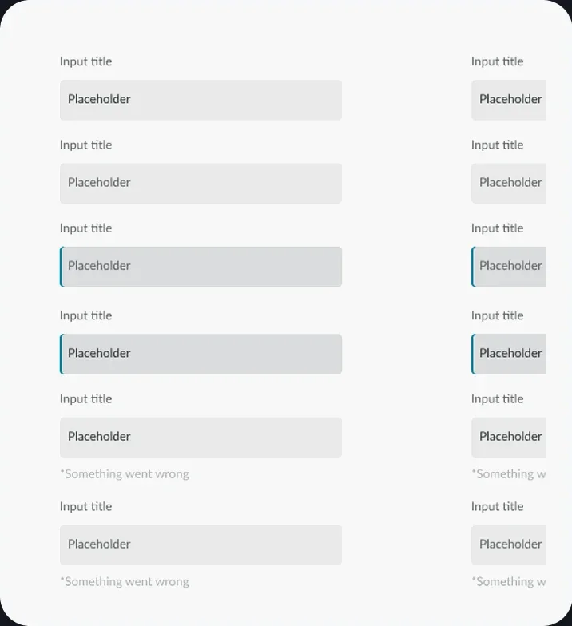
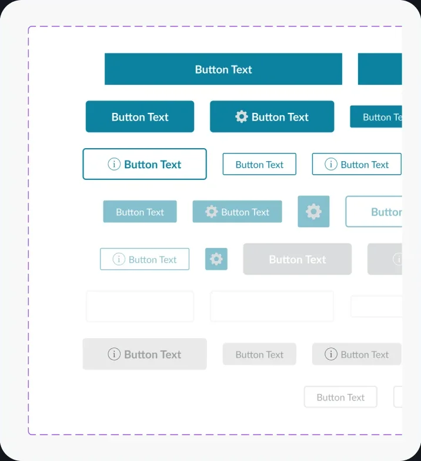
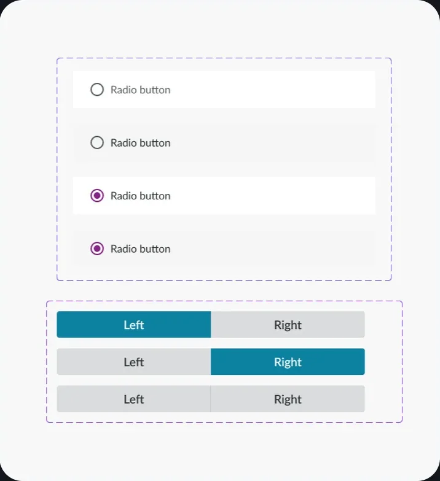
Before: fragments of the working file
One systemfor all screens
Make the product look and behave the same on every screen — on web and mobile.

Before
There were no shared rules: 14 font sizes, 15 radii and 98 fill colors on the same elements.
Goal
A system: shared names, states and rules so designers and developers rely on the same thing.

01 Shared names
Tokens and components are named by purpose: the name shows where and in which state a color is used.
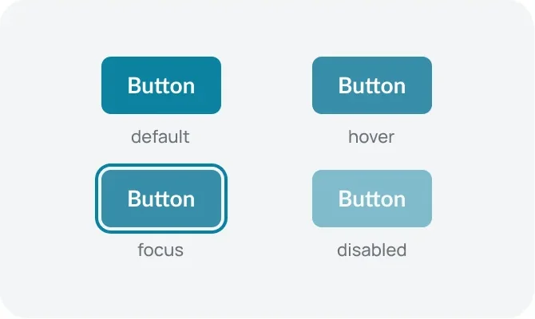
02 Shared states
Default, Hover, Focus and Disabled look and are named the same in every component.

03 Usage rules
Construction rules, for example for a bottom sheet: shape, spacing, typography and the action area.
Before andafter
Counted in the old file and in the final system: what can be checked with numbers.
98 fill colors → 2 scales
Each dot is one color from the old file. Toggle to see the difference.
| Metric | Before | After |
|---|---|---|
| Font sizesfrom 12 to 36 px in the final scale | 14 | 9 |
| Corner radiiresult: a scale of 11 radii, from none to full | 15 | 11 |
| Spacing valuesresult: 12 spacing tokens | 31 | 12 |
| Font familiesLato, Roboto, Inter → Lato only | 3 | 1 |
| Button variantstype × size × state × "icon only" | 41 | 216 |
| Fill colorsteal 50–800 and purple 50–600 + neutral and status | 98 | 2 scales |
“Before” is counted in the old file (the old design system page, about 5,000 layers): unique solid fills, fonts, radii and spacing. “After” is the values of the final system.
Atomicdesign
I built the system in levels: from basic elements to complex interface blocks. That makes it easier to extend and check.

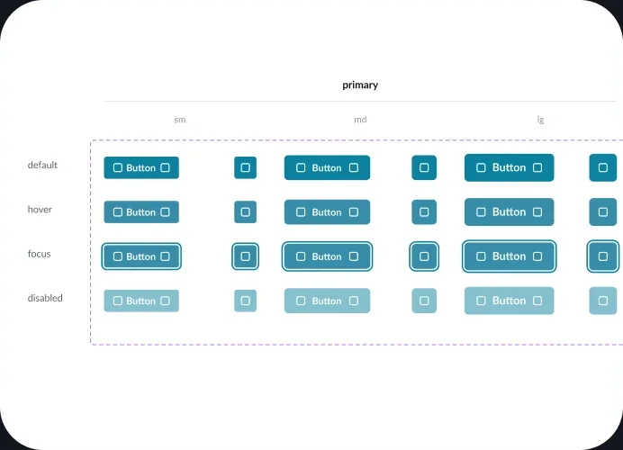
01Atoms
49 components · 495 variants
Icons, buttons, avatars, toggles.
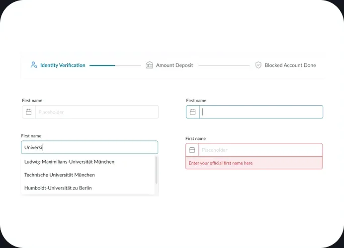
02Molecules
13 components · 73 variants
Inputs, sliders, steppers.
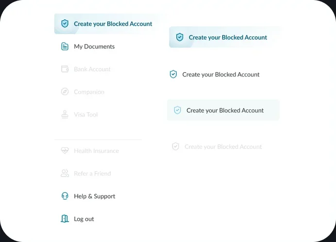
03Organisms
88 components · 376 variants
Header, menu, banners, cards, sections.
Atoms come first (icons, buttons, avatars), molecules are built from them (inputs, sliders, steppers), and organisms from molecules (header, menu, cards).
Systemfoundation
Three layers everything else rests on: colors, typography and icons. Each one in detail below.

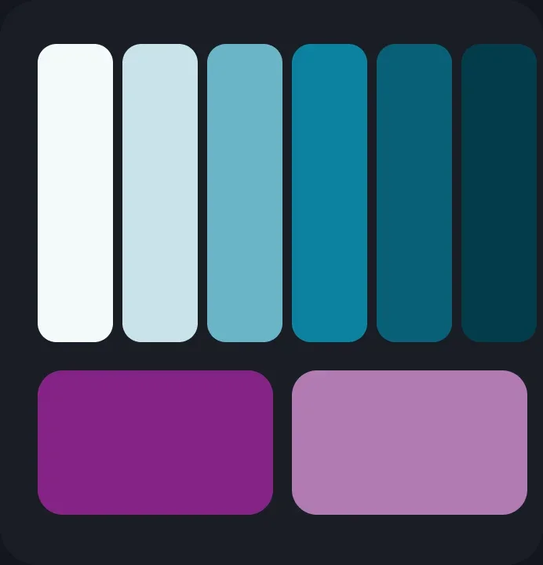
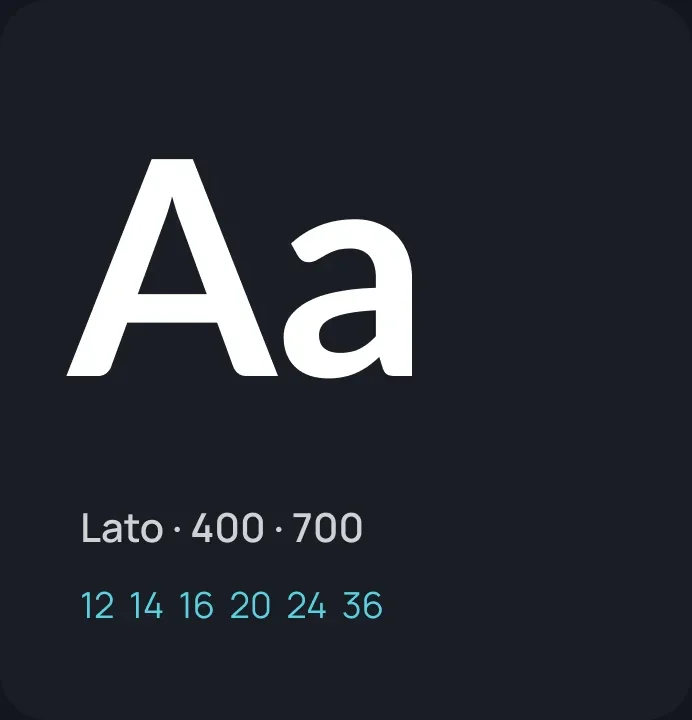
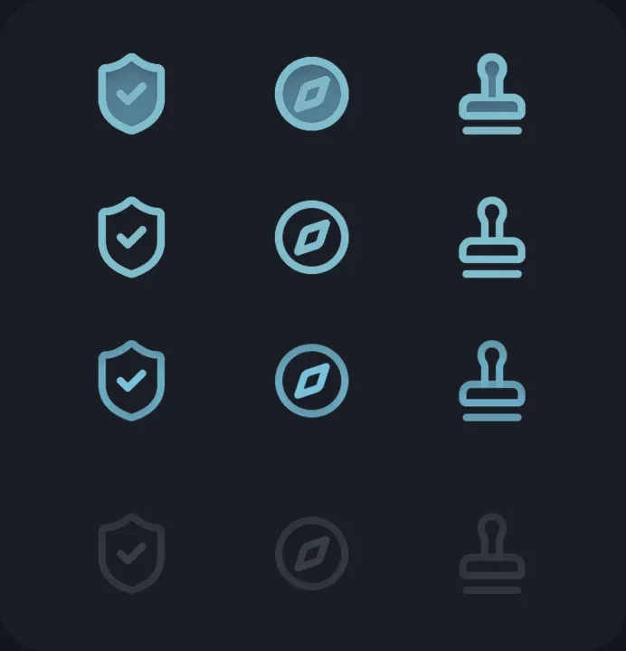
Palette andrules
The primary color is teal, the secondary is purple. Success, errors and warnings have their own groups.
Teal — primary
Purple — secondary
Click a shade to see the token it supports.
Teal — primary
- 50#F3F9FA
- 100#E0F2F8
- 200#B3DFF0
- 300#80CBE7
- 400#0C81A0
- 500#0B748F
- 600#096078
- 700#064C60
- 800#043B4A
Purple — secondary
- 50#F7F2F7
- 100#F3E7F6
- 200#E1C3EA
- 300#CF9FDE
- 400#842385
- 500#731E74
- 600#601A62
Tokens andvariables
Colors work on two levels: primitives and semantics. A token's name says where the color is used.

Color tokens
Two levels: primitive → semantic
Primitives store palette values. Semantic tokens describe purpose: the name shows where the color is used. Example — the primary button.
- button/primary/bg/defaultteal/400 · #0C81A0
- button/primary/bg/hoverteal/500 · #0B748F
- button/primary/bg/pressedteal/600 · #096078
- button/primary/bg/disabledteal/400 · 50% · #0C81A0 · 50%
Recreated for the portfolio from the palette documentation. The original variables remain in the project's working file.
Tokenson screen
How semantic tokens work in the product: the blocked account top-up screen, mobile version.

- text/primary
- text/secondary
- border/default
- surface/raised
- button/primary/bg/default
Typography andspacing
Lato in two weights, nine sizes, 12 spacing tokens and a scale of 11 radii.

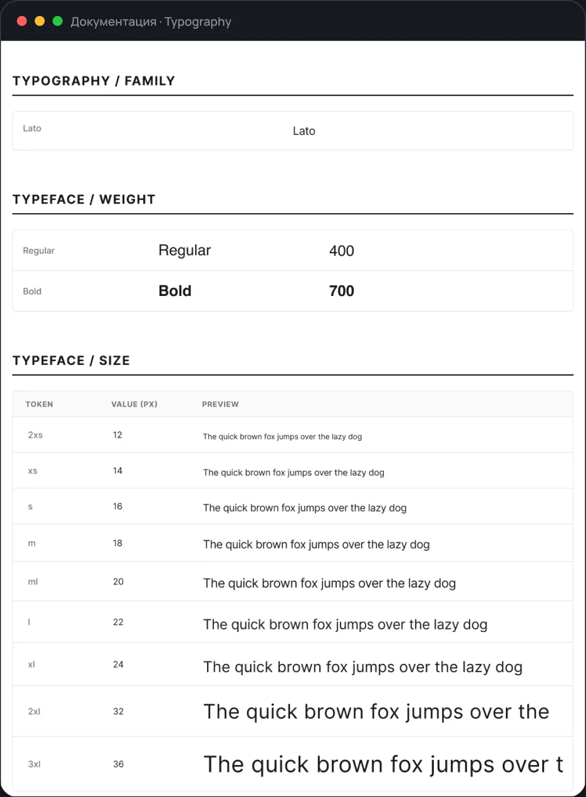
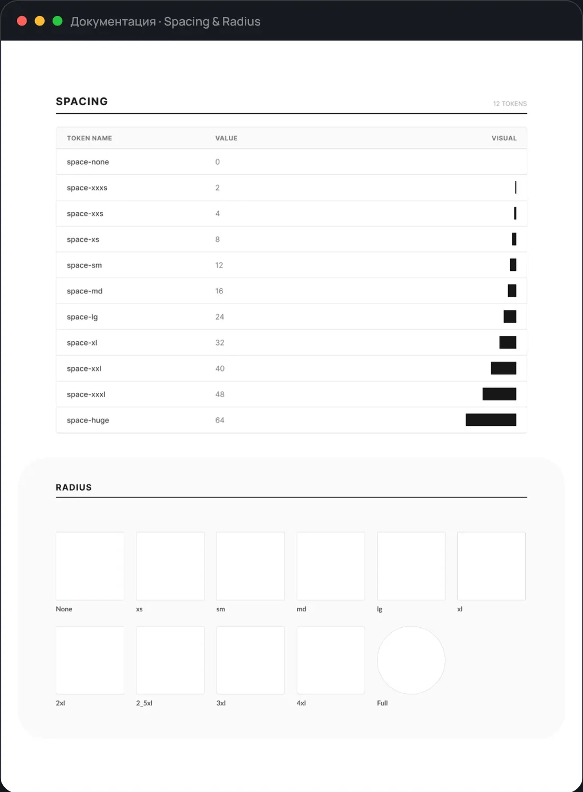
Tap the image to open it larger.
Buttoncomponent
I built the Button component: 9 types, 3 sizes, 4 states and an icon button — 216 variants.


Tap the image to open it larger.
Build abutton
Button — one component instead of a set. Choose a type, state, size and icon: 9 × 4 × 3 × 2 = 216 variants.
Type
State
Size
Icon
variant=primary · state=default · size=md · iconOnly=falseInputfields
A field for web and mobile: Default, Hover, Active, Error states and a suggestions dropdown.

Web desktop


Mobile phone


Switch, Checkbox,Radio
Toggles, checkboxes in all states and radio cards for choosing an option.

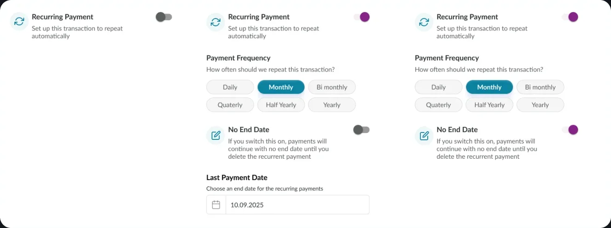
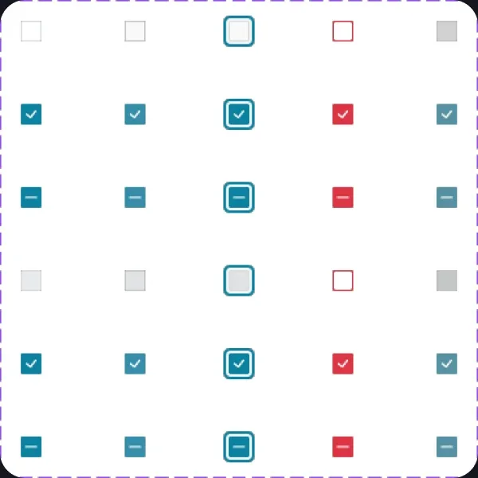
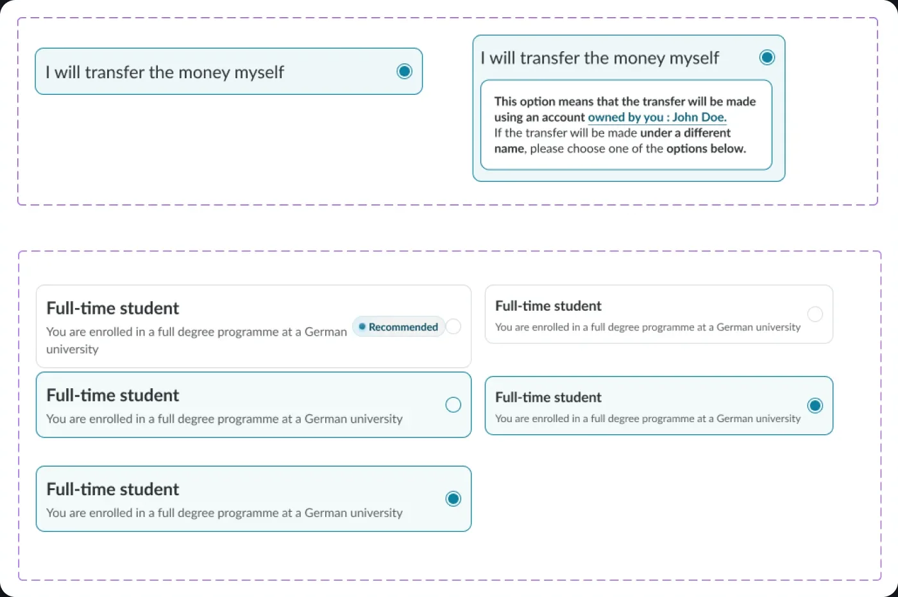

Alerts
Five tones — neutral, info, success, warning and error. Each has a version with a button and with a text link.

Navigation andorganisms
I drew the sidebar, bottom bar, header and icons from scratch; every element has states.

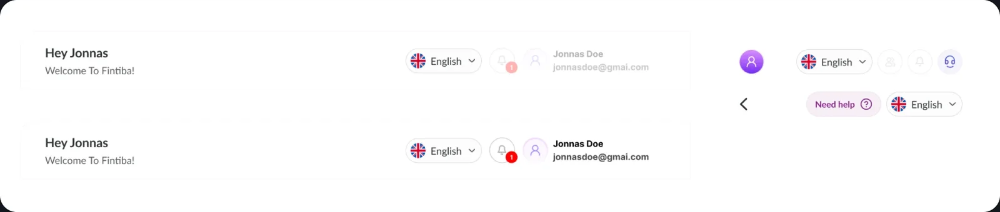
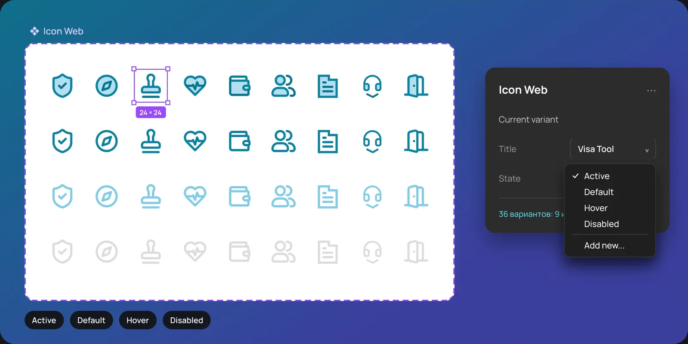
One rule,three patterns
Bottom sheets looked different every time. I ran an audit, described a construction rule and built four patterns into one component.

Construction rule
A step-by-step scheme for building any bottom sheet.
1Container and shape
Surface base.
- Radius
- xl · 12 px, top corners
- Background
- white #FFFFFF
- Shadow
- soft, upward
2Title spacing
Vertical rhythm from the top edge.
- Top padding
- space-md · 16 px
- Handle and gap
- 4 px + space-lg · 24 px
- Total from the top
- 44 px
3Typography
Sizes and weights.
- Title
- xl · 24 px, Bold
- Text
- 15 px, text/secondary
- Line height
- 1.6
4Action zone
Interactive elements.
- Button height
- 48 px
- Gap between
- space-sm · 12 px
- Bottom padding
- space-xl · 32 px
Patterns
Four component variants built by one rule.
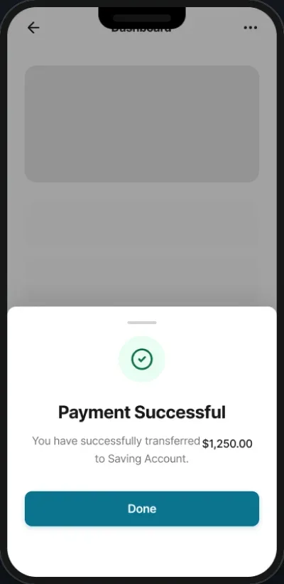
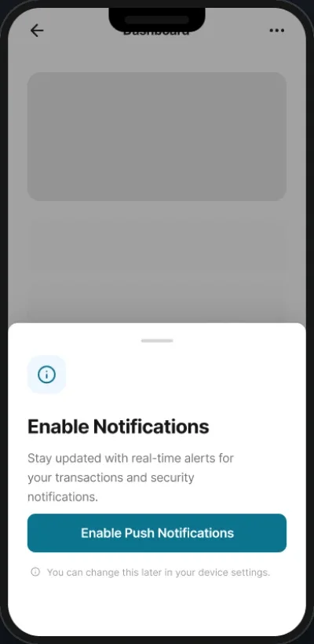
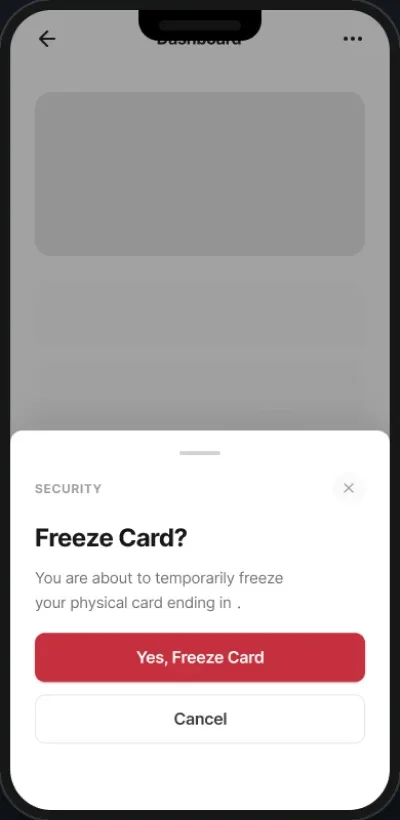
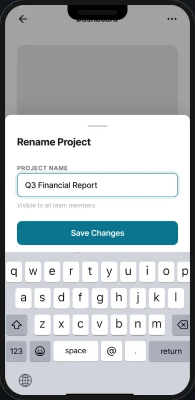
One rule,three patterns
Modals were also built differently every time. I ran an audit, described a construction rule and built three patterns.

Construction rule
A step-by-step scheme for building any modal.
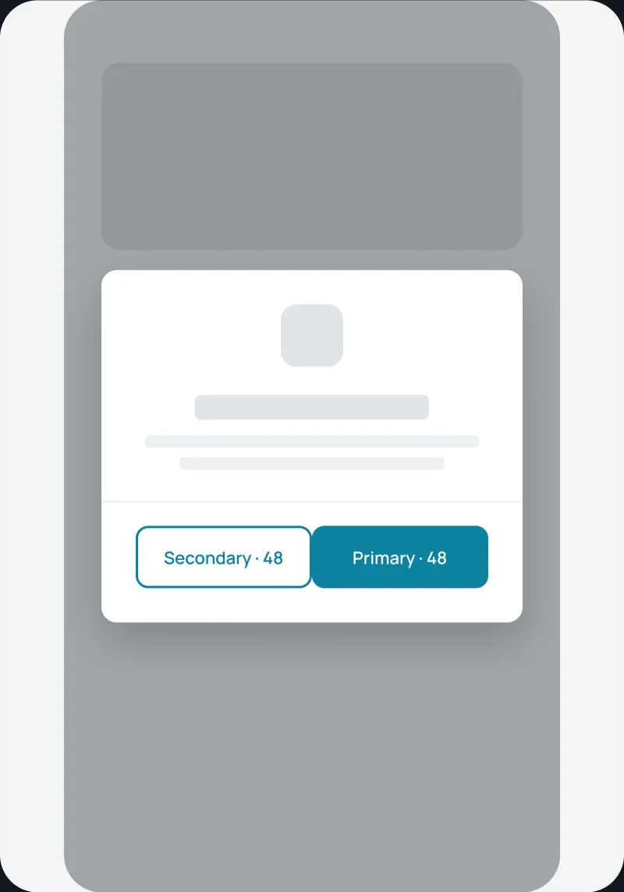
1Container and shape
Surface base.
- Radius
- 10 px · rounded-medium
- Background
- white #FFFFFF
- Sides
- 44 px
- Shadow
- soft, downward
2Icon and spacing
Vertical rhythm from the top.
- Top
- 40 px
- Icon
- 64 × 64, radius 16
- Glyph inside
- 30 × 30
- Before the title
- 32 px
3Typography
Sizes, weights, color.
- Title
- 24 px Bold · text-XL
- Color
- #2B3133
- Text
- 16 px Regular · text-s
- Color
- #5A5D60 · gap 12 px
4Action zone
Divider and buttons.
- Before the divider
- 32 px
- Buttons
- h 48 px · text-m 18 px
- Between buttons
- 16 px
- Top and bottom
- 32 px
Patterns
Three component variants built by one rule.
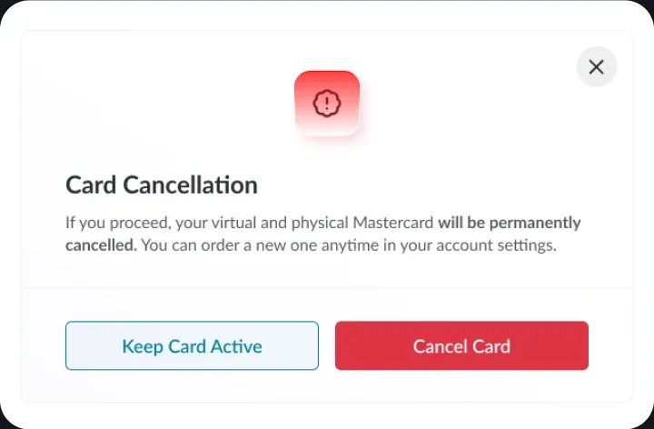
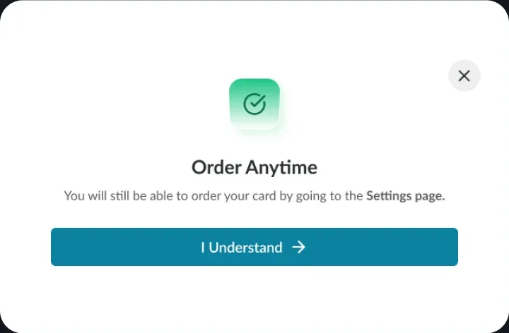
Systemin the product
Screens from the top-up and login flows: how the system looks in the live product.

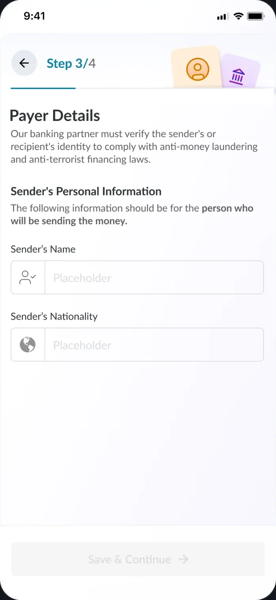
Keydecisions
What I decided and why. The basis is an audit of the old file.
Tokens
Two levels instead of scattered colors
In the old file one teal existed in two shades: #1081A0 and #0C81A0. Now primitives store values, semantics store purpose, and a color changes in one place.
Buttons
One component instead of a set
There used to be separate sets: Button, Button/Text, Button/Navigation. Now there is one Button: 9 types × 3 sizes × 4 states × 2 (with text or icon only) — 216 variants.
Names
Named by role, not by color
button/primary/bg/default and text/primary: the name shows where to use the color. How names changed is in the table below.
Token naming: before → after
Before the system there were almost no tokens — just a couple of names like primary/text and secondary/button; other colors were set as raw values
| Before | After | Collection | Where on screen |
|---|---|---|---|
| primary/text | text/primary | Semantic | Headings and body text |
| no token | text/secondary | Semantic | Secondary text and "Or" |
| no token | border/default | Semantic | Card border |
| no token | surface/raised | Semantic | Card background |
| no token | button/primary/bg/default | Button | Primary button |
Developerhandoff
The rules lived in documentation, not in people's heads: it was prepared in advance and shown to developers.
Naming
Names by meaning and logic
I studied open UI kits and community materials and named tokens and components based on them, so the names were clear to both designers and developers.
Documentation
Files right in Figma
The senior designer put together the documentation with a plugin based on my work. Rules and components live in Figma, next to the system itself.
Presentation
Showing it to the dev team
The finished documentation was presented to developers, so both sides relied on the same names, states and rules.

Whatcame out
Scattered screens became a single foundation: tokens, components and organisms. The structure is ready to grow, for example into a dark theme.

Results for the team
I created the design system from scratch and built a clear component structure with usage rules. The team gained a shared understanding of which elements to use, for which tasks and in which situations. Developers started using shared components and icons, which helped reduce visual inconsistencies between interfaces.
What I learned
I went from creating individual elements to organizing a complete design system: I learned to structure a library, think through component properties and states, define usage rules and apply the system in product scenarios.
Next steps
The next step is to extend the system as the product grows, refine the documentation and usage examples, and gather feedback from designers and developers to improve the components and the library's usability.